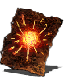

Descrição: Uma das piromancias criadas por Straid, o grande mago da antiga Olaphis. Lança uma bola de fogo estática que explode quando os inimigos se aproximam.
Straid era um mago de talento incomum, muito versado em tanto magias quanto piromancias, mas sua personalidade curiosa jamais permitiu que ele permanecesse no mesmo lugar por muito tempo.
Localização:
Usos: 4
